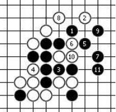
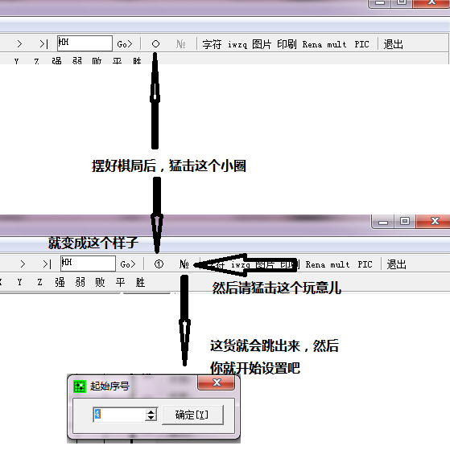

用哪个打谱软件可以实现断点的序号标记？
#1 用哪个打谱软件可以实现断点的序号标记？ 作者：yidefei 发表时间：2013-9-17 17:01:28
我用了好几个软件，想实现如图的序号标记，都没有找到。
寻求帮助与指点。
#2 Re:用哪个打谱软件可以实现断点的序号标记？ 作者：萧翎 发表时间：2013-9-17 18:01:46
slover#3 Re:用哪个打谱软件可以实现断点的序号标记？ 作者：小红眼镜 发表时间：2013-9-17 18:11:33
五子妙手
终结者
Roleservcn
其中前面两者操作最简单，第三个操作稍微麻烦点儿。
#4 Re:用哪个打谱软件可以实现断点的序号标记？ 作者：小红眼镜 发表时间：2013-9-17 18:27:06
Roleservcn懒得说了。。有兴趣可以自行摸索。。
正版终结者：
设置→设置→显示→前几个字不显示棋子序号/棋子序号从多少开始
盗版终结者或者普通的爱五子棋打谱软件：
设置→盘面显示→背景图片→（）着数后显示序号/（）起始序号
如果是五子妙手：
见下图设置
［ 踵酃同学于 2013-9-19 5:08:10 时花20金币送鲜花一朵］
#5 Re:用哪个打谱软件可以实现断点的序号标记？ 作者：yidefei 发表时间：2013-9-17 20:05:10
谢谢了。
#6 Re:用哪个打谱软件可以实现断点的序号标记？ 作者：极地剑客 发表时间：2013-9-18 3:15:20
习惯zfive。以前给别人出题摆也是这个。